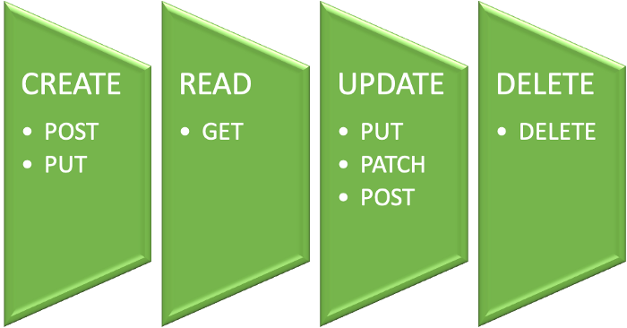
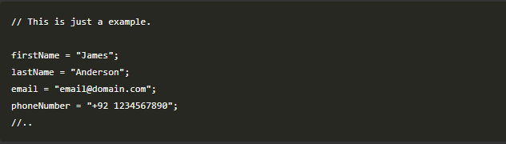
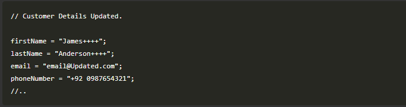
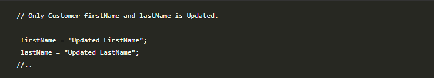

HTTP é o protocolo que determina os padrões e definir as regras de troca de informações entre servidores que abrigam sites e computadores, ou seja é a ponte que organiza o tráfico e padroniza toda codificação, fazendo o site chegar até o usuário quando esse é requerido. CRUD é um conjunto de operações primitivas ( principalmente para banco de dados e armazenamento de dados estatísticos), ou seja, CRUD realiza as operações básicas em um repositório de dados. C - Create (criar) / R - Read (ler) / U - Update (atualizar) / D - Delete (deletar) O que entendi da pesquisa realizada foi que cada função básica do CRUD pode ser mapeada para o método do protocolo HTTP, mas é preciso considerar alguns fatores. o CRUD lida com as operações básicas do banco de dados, o outro interage com um sistema complexo (principalmente para serviços de web seus sistemas ativos). E com a maioria dos aplicativos na internet sendo CRUD os desenvolvedores devem aprender como combinar os verbos http com essas orações. 
PUT substitui todos os atuais dados dos recursos de destino pelos dados passados na requisição, PUT sobrescreve toda entidade,se ela já existe, e cria um novo recurso se ainda não existe, ou seja para você atualizar os dados precisa digitar todas as informações de novo. Por exemplo, quando você deseja alterar o nome de uma pessoa em um banco de dados você precisa enviar o recurso ao fazer uma solicitação PUT. {"first" : "Joh" , “last” : "Stone"} Para fazer uma solicitação PUT você precisa enviar os dois parâmetros: o primeiro e o segundo. PATCH aplica modificações parciais em um recurso. É possível modificar uma parte do recurso.Isso significa que você só precisa enviar os dados que deseja atualizar e não afetará ou alterará mais nada. EXEMPLO: Detalhes do cliente:  Quando queremos atualizar para o registro inteiro? temos que usar HttpPUTverb para isso. Tal como:  Por outro lado, se quisermos atualizar apenas a parte do registro e não o registro inteiro, vá para Http PATCH verb. Como:  Ao usar a requisição PUT, temos que enviar todos os parâmetros, como firstName, lastName, email, phoneNumber onde, como em patch request, enviar apenas os parâmetros que queremos atualizar, e isso não afetará ou alterará outros dados.
Em matemática e ciência da computação, a idempotência é a propriedade que algumas operações têm de poderem ser aplicada várias vezes sem que o valor do resultado se altera após a aplicação Inicial. -- Wikipédia. O método HTTP é idempotente se uma requisição Idêntica pode ser feita uma ou mais vezes em sequência com o mesmo efeito enquanto deixa o servidor no mesmo estado. - GET, PUT, DELETE, HEARD, OPTIONS, TRACE, e CONNECT -- são idempotente. Alguns métodos como o GET, podem ser chamado diversas vezes seguidas sem problema nenhum, a resposta será sempre a mesma. Porque quando fazemos uma requisição do tipo GET não estamos alterando nada no servidor, somente consultando informações. - POST -- não é idempotente. A principal funcionalidade de uma chamada POST é criar um recurso, então a cada requisição que se realiza, um serurso será criado e assim alterando o estado da aplicação e não mantenso o atual.
Padrões de Criação -- Os padrões de criação são aqueles que abstrai e/ou adia o processo de criação dos objetos. Eles ajudam a tornar um sistema independentemente de como seus objetos são criados, compostos e representados. Abstract Factory -- A intenção deste é fornecer uma Interface para criação de famílias de objetos relacionados ou dependentes sem especificar suas classes concretas. Também conhecido como kit, a ideia básica é oferecer ao usuário (desenvolvedor) a possibilidade de executar uma aplicação sobre diferentes plataformas. Factory Methods -- Define uma Interface para criar objetos, mas deixa que as subclasses decidam que classe instanciar, possibilita adiar criação de objetos e subclasses. Singleton -- Garante que uma objeto terá apenas uma única Instância, Isto é, que uma classe irá gerar apenas um objeto e que este estará disponível de forma única para todo o escopo de uma aplicação. Padões Estruturais -- Se preocupam com a forma como classes e objetos são compostos para formar estruturas maiores. Adapter -- Converte a interface de uma classe por outra esperada pelos clientes. O que possibilita que classes com interfaces incompatíveis trabalhem em conjunto. Padrões de Comportamento -- Se concentram nos algoritmos e atribuições de responsabilidades entre os objetos. Eles não descrevem apenas padrões de objetos ou classes, mas também os padrões de comunicação entre os objetos. Templete Method -- Define o esqueleto de um algoritmo em uma operação, postergando(deferring) alguns passos para subclasses. Permite que subclasses redefinam certos passos de um algoritmo sem mudar a estrutura dele. Os padrões de Software possibilitam através de uma linguagem clara e concisa, que os projetistas experientes transfiram os seus conhecimentos aos mais novos em um alto nível de abstrações e assim facilita o desenvolvimento e o reaproveitamento de códigos.